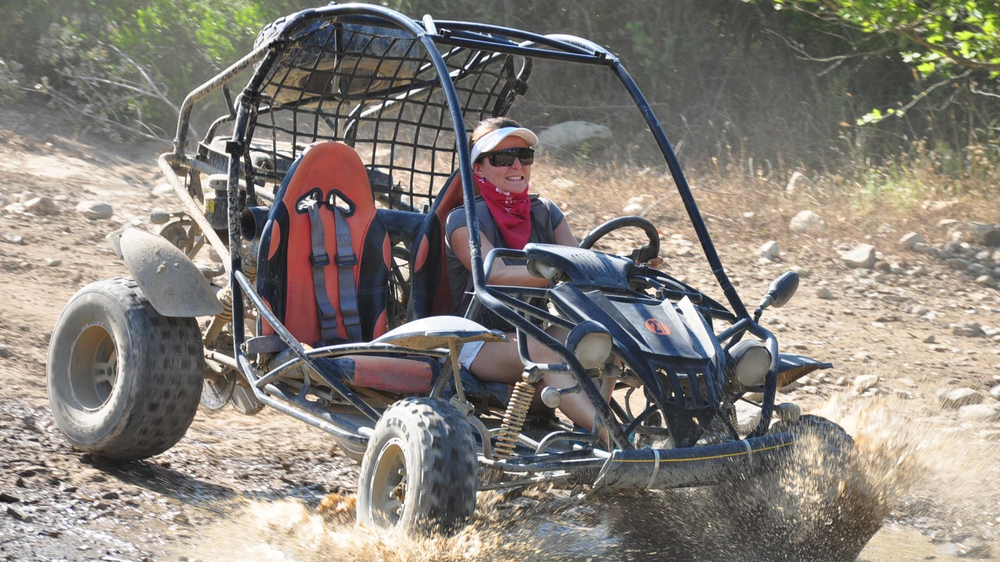
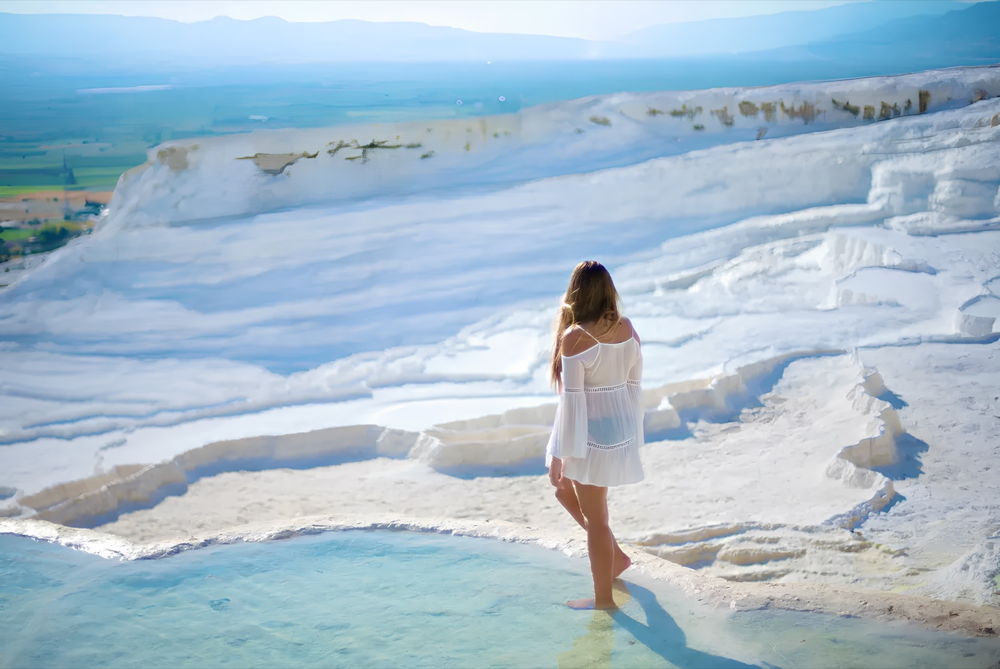
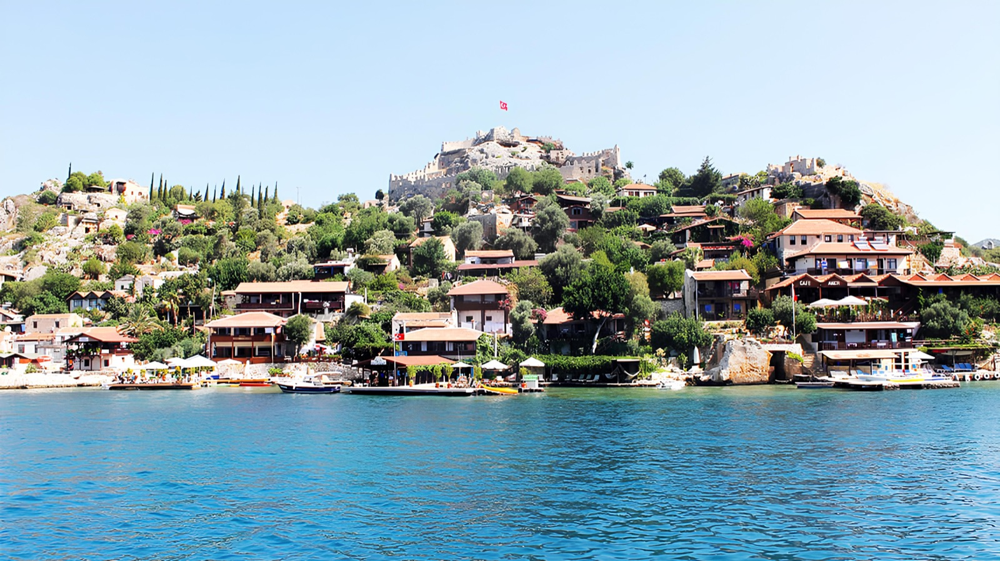

Rafting ve Macera
Köprülü Kanyon’da rafting; seçili programlarda buggy, zipline veya kanyon aktiviteleri.
Rafting müsaitliği sor →Bir gününüzü Köprülü Kanyon’da rafting, Pamukkale’de kültür, Demre ve Kekova’da tarih ya da Toroslar’da safariyle değerlendirin. Konaklama bölgenize ve temponuza uygun rotayı transfer süresiyle birlikte karşılaştırın.

Mesafe, fiziksel tempo ve dahil olan hizmetler değişir. Aşağıdaki rotalar Antalya’dan en çok sorulan günübirlik seçeneklerdir.

Köprülü Kanyon’da rafting; seçili programlarda buggy, zipline veya kanyon aktiviteleri.
Rafting müsaitliği sor →
Beyaz travertenler, antik kent ve uzun kara yolculuğuyla kültür odaklı tam gün.
Pamukkale programını sor →
Likya tarihi, kaya mezarları ve seçili programda Kekova tekne gezisi.
Demre rotasını sor →Antalya’dan günübirlik tur seçerken haritadaki mesafe tek başına yeterli değildir. Otelin konumu, sabah alınış sırası, aktivitenin fiziksel temposu ve dönüş saati toplam deneyimi belirler. Lara’dan Köprülü Kanyon ile Konyaaltı’ndan Pamukkale aynı ulaşım düzenine sahip değildir. Programın gerçek başlangıç ve dönüş saatini sormak önemlidir.
Rafting, hareketli bir gün isteyen ve su aktivitesine engel sağlık durumu bulunmayan misafirler için uygundur. Parkur, su seviyesi ve yaş sınırı işletmeye göre değişebilir. Kaymayan ayakkabı, yedek kıyafet ve havlu önerilir; telefon ve değerli eşyalar için su geçirmez koruma faydalıdır.
Antalya’dan Pamukkale tam günlük ve uzun yolculuklu bir programdır. Erken hareket ve geç dönüş beklenmelidir. Travertenlerde yürüyüş, Hierapolis alanı ve serbest zaman programın temelini oluşturur. Giriş ücretleri, Kleopatra Havuzu ve öğünlerin dahil olup olmadığı paket bazında kontrol edilmelidir.
Programlar genellikle Myra Antik Kenti, Aziz Nikolaos çevresi ve Kekova bölgesini birleştirir. Tekne gezisinin süresi, müze girişleri ve öğle yemeği dahil hizmetlere göre farklılık gösterebilir. Deniz ve tarih deneyimini aynı gün isteyenler için dengeli bir rotadır.
Antik kentlere ilgi duyanlar için Roma dönemi şehir dokusu, Aspendos Tiyatrosu ve Side’nin kıyı atmosferini birleştirir. Açık alanda yürüyüş yoğun olabileceği için sıcak aylarda şapka, su ve güneş koruyucu önemlidir. Müze kartı veya giriş ücretleri önceden sorulmalıdır.
Birçok turda belirli Antalya bölgelerinden transfer bulunur. Uzak oteller, özel alınış noktaları veya düşük katılımlı tarihler ek ücrete tabi olabilir. Otel adını rezervasyon talebinde paylaşmak, net alınış saati ve fiyat verilmesini sağlar.
Antalya’dan yola çıkmadan önce kısa bilgiler.
Uzak rotalar sabah erken saatlerde, şehir ve yakın aktivite turları daha geç başlayabilir. Kesin alınış saati otel bölgesine göre bildirilir.
Yaş ve boy sınırı su koşuluna ve işletmeye göre değişir. Çocuğun yaşı rezervasyon sırasında mutlaka paylaşılmalıdır.
Sigorta kapsamı ve aktiviteye özel koşullar tur sağlayıcısına göre değişir. Kesin kapsam rezervasyon belgesinde kontrol edilmelidir.
Birçok tam günlük programda öğle yemeği bulunur; kahvaltı, içecek ve akşam yemeği her zaman dahil değildir. Paket ayrıntıları yazılı olarak teyit edilir.
Günübirlik rotalara şehir veya deniz günü ekleyin.